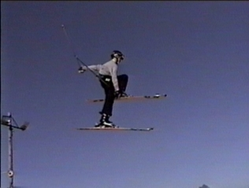

How to Judo Grab
Judo Grab, Judo Grab. Yes this is a cool trick. The name is cool and the rest is cool too. Another Fairly easy trick you should do.
The Steps:
1) Hit the jump.
2)Bring both legs up.
3)Move you grab hand down and other hand up
4)Grab your ski (Grab)-Hand to Opposite ski infront
of leg to inside of boot .
5)Release grab and extend legs.
6)Land
Tweaking:
Instead of bringing up both feet you only bring up the one your going
to grab. Then all you do is grab and kick the other leg out. Also adds some
style by keeping bothe skis flat.
Picture:
